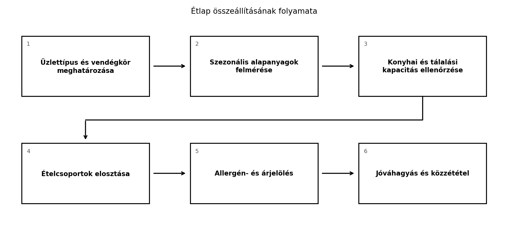

Az étlapot gyakran az étterem névjegyének nevezik, pedig a szakács és az üzletvezető szempontjából ennél több: tervezési, termelési, jogi és biztonsági dokumentum is. Ha az étlap jól működik, a konyha kiszámíthatóan tud dolgozni, a vendég könnyen dönt, a felszolgáló egyértelműen tud tájékoztatni. Ha az étlap hibás, elmarad az ár vagy az allergénjelölés, akkor nemcsak a vendég bizalmát veszíthetjük el, hanem fogyasztóvédelmi ellenőrzésnél, allergiás vendégnél vagy ételkalkulációnál is gond keletkezik. Ebben az alfejezetben az étlap feladatát, típusait, ételcsoportosítását és tartalmi követelményeit tanítjuk meg.
Szemléletes kép. Egy hétvégi ebédszolgálatban a séf azt mondja: „A napi menüt a szokásos leves–főétel–desszert rend szerint állítsd össze, és minden ételnél jelezd a glutént, a tojást meg a tejet.” A tanuló észreveszi, hogy az étlap nem egyszerű lista: a fogások sorrendje, az adagok, az árak és az allergénjelölések együtt adják a munka keretét. Ugyanazt az ételsort használja majd a konyhai munkaterv és a vásárlási lista is.
Definíció. Az étlap a vendéglátó üzlet által kínált ételek, italok és egyéb fogyasztható termékek írásos jegyzéke, amely tartalmazza a megnevezést, az árat, az adagot, a szükséges fogyasztói tájékoztatást, valamint az allergénjelölést. Az étlap lehet nyomtatott, digitális (pl. táblagépes) vagy táblára írt, de tartalmi követelményei minden formában azonosak.
Szabály. Az étlapnak öt fő feladata van a konyha szempontjából:
Megjegyzés. Az étlap nem azonos a receptúrával és a kalkulációval. A receptúra a szakácsnak szóló technológiai leírás, a kalkuláció a gazdasági számítás, az étlap pedig a vendég felé megjelenő kínálati és tájékoztató felület. A három dokumentumot össze kell hangolni: ugyanaz az étel szerepeljen az étlapon, a kalkulációban és a technológiai lapon.
Az étlap típusai. A vendéglátó üzletekben többféle étlapot használhatunk, amelyeket más-más célból készítünk.
| Típus | Tartalom | Frissítés | Példa |
|---|---|---|---|
| Állandó étlap (à la carte) | A teljes választék ételcsoportonként | Hetente, havonta vagy szezononként | Rántott sertésszelet, marhapörkölt |
| Napi étlap | Az aznapi kínálat, gyakran leves–főétel–desszert | Naponta | Hétfői menü |
| Menükártya | Rögzített fogássor egy áron, több fogással | Naponta vagy alkalmi rendezvényen | Kétfogásos ebédmenü |
| Itallap | Italok csoportosítva, árakkal, űrtartalommal | Idényenként | Ásványvíz, borok, üdítők |
| Desszertlap | Édességek, kávék, kiegészítők | Hetente vagy havonta | Somlói galuska, palacsinta |
Példa. Egy családi étteremben az állandó étlapon 20 tétel szerepel, a napi étlapon 4–5 fogás, az itallapon 40 ital. A menükártya egy szűkebb, kedvezményesebb választék, ezért a konyha azt is tervezheti, hogy a menühöz rendel nagyobb mennyiséget.
Figyelem. A digitális étlap is írásos étlap. A képernyőn megjelenő árnak, allergénjelölésnek és adagmegnevezésnek ugyanolyan pontosnak kell lennie, mint a papíron.
Az étlapon az ételeket meghatározott sorrendbe, ételcsoportokba rendezzük. A vendéglátásban két nagy rendszert használunk: a nyugat-európait és a közép-európait. Mindkettő lényege, hogy a vendég az étkezés logikája szerint találja meg az ételeket, a konyha pedig a technológiai sorrend szerint tudja ütemezni a termelést.
Definíció. A nyugat-európai ételsorrend a klasszikus francia étkezési rendre épül: hideg előételek, levesek, meleg előételek, halételek, húsételek, köretek, saláták, sajtok, desszertek, gyümölcsök, kávé. Ebben a rendszerben az előétel nem a főétel kiegészítője, hanem önálló, gyakran hideg vagy meleg kisebb fogás. A hal és a hús külön csoportba kerül, a köret pedig önállóan is választható.
Definíció. A közép-európai ételsorrend a hazai és a környező országok vendéglátói gyakorlatát követi: hideg előételek, levesek, meleg előételek, halételek, készételek (előre elkészített, tárolható vagy újramelegíthető főételek, pl. pörkölt, főzelék), frissensültek (rendelésre sütött ételek, pl. rántott hús, steak), köretek, saláták, tészták és édességek, sajtok, gyümölcs (ellenőrizendő: hazai vendéglátó-ipari tankönyv). A közép-európai (magyar) rendszert a nyugat-európaitól főleg a készételek és a frissensültek külön csoportja különbözteti meg. A köret a főétel mellé, ahhoz rendelten jelenik meg. A napi menü (leves + főétel, esetleg desszert) nem étlapsorrend, hanem rövidített, kedvező árú kínálat; a vendég leggyakrabban egy levest és egy főételt választ.
Táblázat. A két rendszer összehasonlítása.
| Szempont | Nyugat-európai | Közép-európai |
|---|---|---|
| Első fogás | Hideg előétel | Hideg előétel (ha van), majd leves |
| Főétel csoportjai | Hal, hús külön | Halétel, készétel, frissensült; a köret a főételhez rendelve |
| Köret megjelenése | Önálló csoportban | A főételhez rendelve |
| Desszert | Sajt, desszert, gyümölcs külön | Tészta/édesség, sajt, gyümölcs |
| Jellemző étkezés | Hosszabb, többfogásos menü | Rövid, 2–3 fogásos étkezés |
Példa. Ugyanaz az ételsor a két rendszerben másképp épül fel. Nyugat-európai: lazactatár hideg előételként, francia hagymaleves, sült kacsamell burgonyapürével önálló köretként, sajtválogatás, csokoládés desszert. Közép-európai: húsleves (leves), rántott sertésszelet rizskörettel (frissensült), uborkasaláta, palacsinta (édesség).
Szabály. Az étlap szerkesztésekor az ételcsoportokat ebben a sorrendben kell jelölni, hogy a vendég ne keressen összevissza. A levesek mindkét rendszerben a hideg előételek után, a főételek előtt állnak; a közép-európai étlapon a főételeket készételekre és frissensültekre bontjuk. A napi menü leves–főétel–desszert rendje ettől külön fogalom. A desszertek mindkét rendszerben a végén vannak.
Figyelem. Ha a konyha vegyes rendszert használ, akkor is legyen világos fejcím, például „Hideg előételek”, „Levesek”, „Főételek”, „Köretek, saláták”, „Desszertek”. A kevert kategóriák nélküli étlap nehezen követhető a vendég és a felszolgáló számára is.
Az étlap összeállítása nem ötletszerű receptgyűjtés, hanem tudatos tervezés. Az alábbi szempontokat kell mérlegelni.
Üzlettípus és vendégkör. Más étlap való egy büfébe, egy családi étterembe, egy rendezvényhelyszínre, egy kifőzdébe vagy egy fine dining étterembe. A vendégkör meghatározza az adagot, az árat, a fogások számát és a diétás igényeket is. Egy iskolai büfében nem tervezünk drága tengeri haltatárt; egy üzleti ebédhelyen viszont a gyors, 2–3 fogásos menü a jó választás.
Szezon és alapanyag-ellátás. A szezonális zöldség és gyümölcs olcsóbb, jobb minőségű, és a magyar vendégek számára is ismerős. Télen a párolt káposzta, a gyökérzöldséges leves, nyáron a friss paradicsom, a cukkini, a sárgabarack kerülhet előtérbe. Az étlap tervezésekor az áruátvétel és a beszállítók elérhetősége is fontos.
Konyhai kapacitás és technológia. Csak olyan étel kerüljön az étlapra, amelyet a konyha a rendelkezésre álló gépekkel, eszközökkel, létszámmal és idővel biztonságosan, egyenletes minőségben el tud készíteni. Nem elég, ha egy étel jól hangzik, ha a konyhában nincs hozzá konvektomat, sütőlap, elegendő hűtőtér vagy gyakorlott szakács.
Változatosság és egyensúly. Az étlapon szerepeljen többféle nyersanyag, technológia, íz és állag. Ne legyen például minden főétel rántott vagy pirított; ne legyen minden leves tejszínes; ne legyen kizárólag sertéshús. A színek, az adagnagyságok és a hőfokok is változzanak. Így a vendégek nem unják meg a kínálatot, és a konyha is jobban kihasználja a gépeket.
Ár és fedezet. Az étlap árait a kalkuláció alapján kell meghatározni. Az étlapon belül legyen kisebb és nagyobb fedezetű tétel is. A napi menü általában alacsonyabb árfekvésű, a nagyobb értékű à la carte tétel magasabb árat érhet. Az árnak összhangban kell lennie az adaggal, a nyersanyagminőséggel és a vendégkör fizetőképességével.
Diétás és allergén igények. Az étlapon jelölni kell a 14 fő allergént minden ételnél, és lehetőleg legyen választható glutén-, laktóz- vagy húsmentes étel. Ez nemcsak jogi kötelezettség, hanem a vendég bizalmát is növeli.
Kereszthasznosítás és hulladékcsökkentés. Az étlap tervezésekor használjuk fel a raktáron lévő alapanyagokat, a megmaradt húsrészeket, a zöldségek szeletelési maradékait. Így csökken a veszteség és az anyagköltség. Az étlapon szereplő ételek alapanyagai lehetőleg közös beszerzésből származzanak.
FOLYAMATÁBRA. Az étlap összeállítása lépésekre bontható.

Az ábra azt mutatja, hogy a tervezés a vendégkörből indul, utána a nyersanyag és a kapacitás következik, majd az ételcsoportokra bontás, a jogi tájékoztatás és a jóváhagyás zárja a folyamatot. Egyik lépés sem hagyható ki, mert a hiányzó allergénjelölés vagy a túltervezett étlap később termelési és fogyasztóvédelmi hibát okoz.
Az étlap nem csupán kreatív lista, hanem a fogyasztóvédelmi előírások szerint meghatározott tartalmi elemekkel bír.
Jogszabály. A fogyasztóvédelmi törvény és a kapcsolódó árfeltüntetési szabályok szerint a vendéglátó üzletben az ételek és italok fogyasztói árát, az adagot, valamint a termék megnevezését úgy kell feltüntetni, hogy a vendég egyértelműen tudja, mit és mennyiért kap. Az árnak a ténylegesen fizetendő összegként kell megjelennie. Ahol felszolgálási díj vagy szervizdíj van, azt külön, egyértelműen jelezni kell. (Ellenőrizendő: hatályos árfeltüntetési rendelet és fogyasztóvédelmi törvény.)
Jogszabály. Az 1169/2011/EU rendelet II. mellékletében felsorolt 14 fő allergént a vendéglátásban kínált, nem előre csomagolt ételeknél is jelezni kell. A tájékoztatás történhet az étlapon, külön allergénlistán, vagy szóban, de írásos formában elérhetőnek kell lennie. (Ellenőrizendő: a hazai allergén-tájékoztatási részletszabály.)
Definíció. Az étlap kötelező tartalmi elemei:
Példa. Helytelen: „Húsleves 1200”. Helyes: „Tyúkhúsleves zöldségekkel, finommetélttel (glutén, tojás, zeller) – 1 250 Ft (350 ml)”.
Figyelem. Az adag jelölése azért fontos, mert a vendég az ár és az adag alapján tudja összehasonlítani az ételeket, és az ellenőrzés is vizsgálja, hogy a ténylegesen kiadott adag megfelel-e az étlapon feltüntetettnek. A konyha számára az adag meghatározza a kiadósúlyt, a kalkulációt és a leltár-ellenőrzést is.
Szabály. Az allergénjelölésnél a 14 fő allergént használjuk: glutént tartalmazó gabonafélék, rákfélék, tojás, halak, földimogyoró, szójabab, tej, diófélék, zeller, mustár, szezámmag, kén-dioxid és szulfitok, csillagfürt, puhatestűek. Ezeket a neveket a vendég számára érthető formában kell feltüntetni. Az étlapon lehetőség szerint ne csak kódokat használjunk, hanem a tényleges megnevezést (pl. „glutén” a búzalisztnél, „tojás” a panírnál, „tej” a tejszínnél). Ha az étlapon rövidítést vagy szimbólumot alkalmazunk, annak jelentését az adott oldalon vagy csatolt listában magyarázzuk el.
Allergén. Egy rántott sertésszelet esetén az étlapon jelölendő: glutén (liszt, morzsa), tojás (a felvert tojás a panírban). Ha a morzsa szóját vagy szezámmagot is tartalmaz, azt is jelölni kell. A tejfölös mártásnál tej és mustár (ha mustárt főzünk bele), a zelleres levesnél zeller. A keresztszennyeződés miatt az étlapon kiegészítő tájékoztatást adhatunk: „A konyha nem garantálja a nyomokban előforduló allergének teljes hiányát; allergiás vendég kérjen tájékoztatást.” Az állítást mindig a tényleges konyhai eljáráshoz kell igazítani. Tilos egy ételt ellenőrizetlenül „allergénmentesnek” nevezni.
Példa étlaprészlet. Egy hétközi ebédmenü étlapja a következő lehet:
Napi ebédmenü – minta
| Fogás | Megnevezés | Ár | Adag | Allergének |
|---|---|---|---|---|
| Leves | Sárgaborsóleves füstölt császárhússal | 950 Ft | 300 ml | glutén (rántás), zeller |
| Főétel | Rántott sertésszelet rizskörettel, tartármártással | 2 350 Ft | 180 g hús + 250 g rizs + 50 ml mártás | glutén, tojás, tej, mustár |
| Desszert | Almás pite vaníliasodóval | 1 050 Ft | 150 g pite + 80 ml sodó | glutén, tojás, tej |
Ebben a példában a leves a közép-európai ételsorrend szerint az első fogás, a főétel a hús + köret együttesen, a desszert zár. Az allergéneket a tényleges összetevők alapján tüntettük fel. A mustár a tartármártásban jelenik meg, ezért jeleztük, a rizs gluténmentes, ezért nincs jelölve. A zeller és a rántásból származó glutén a levesben van (a füstölt hús összetevőit a gyártói címke alapján ellenőrizni kell), a vaníliasodóban tej és tojás, az almás pitében glutén. A konyhának ez a táblázat ad keretet a termeléshez.
Az étlaptervezés után a konyha kiszámítja, hány adagot készítsen az egyes fogásokból. Ez a számítás a későbbi kalkulációnak és munkatervnek is alapja.
Számítás. Egy étterem napi menüjéhez 80 vendéget várnak. A korábbi tapasztalat szerint a levest a vendégek 70%-a választja, a főétel mindenki rendel, a desszertet 40%-a választja. Hány adag levest, főételt és desszertet készítsen a konyha?
Adott:
- vendégszám
- leves arány
- főétel arány
- desszert arány
Keresett:
- levesadag
,
főételadag
,
desszertadag
Képlet:
Behelyettesítés:
Eredmény: A konyha 56 adag levest, 80 adag főételt és 32 adag desszertet tervezhet. Ellenőrzés: a leves esetén , a desszertnél , az arányok visszaadják a kiindulási értékeket.
Megjegyzés. Az arányok nem jogszabályi adatok, hanem üzemi tapasztalatok. A tényleges adagszámot mindig az adott nap foglaltsága, időjárása, ünnepei és étlapválasztása módosíthatja. Az anyaghányad-számítás és a kalkuláció az Anyaghányad-számítás és receptúra-átszámítás, illetve az Ételkalkuláció, árengedmény, felár és ár-bevétel elemzés alfejezetben következik.
Cél. Egy elkészült napi étlap ellenőrzése a kötelező tartalmi elemek, az ételsorrend és a konyhai megvalósíthatóság szempontjából.
Eszközök, anyagok: étlaptervezet, 14 allergén listája, HACCP-kivonat a kockázatos élelmiszerekről, számológép, kalkulációs lapok.
Biztonsági korlát. Az étlapra csak olyan étel kerülhet, amelyhez a konyha rendelkezik a biztonságos elkészítéshez szükséges technológiával, hűtőkapacitással, tisztítási és hőkezelési feltételekkel. Nyers tojásos vagy alacsony hőmérsékleten hőkezelt étel csak akkor kerülhet fel, ha az üzemi HACCP-terv ezt engedi, és a vendég tájékoztatása megtörténik.
Lépések: 1. Ellenőrizd, hogy az üzlettípusnak és a vendégkörnek megfelel-e az étlap hossza, árszintje és fogásszáma. 2. Ellenőrizd, hogy a fogások a választott ételsorrendben, ételcsoportonként csoportosítva jelennek meg. 3. Ellenőrizd minden tételnél a pontos megnevezést, a fogyasztói árat és az adagot. 4. Ellenőrizd az allergénjelölést: az adott ételben ténylegesen előforduló 14 fő allergén mindegyike szerepel-e. 5. Ellenőrizd, hogy a konyha kapacitása, a gépek és a szakácsok létszáma elég-e a csúcsidőben az étlap összes tételéhez. 6. Nézd meg a kereszthasznosítást: a napi étlap és az állandó étlap alapanyagai összehangolhatók-e. 7. Kérd ki a séf és az üzletvezető jóváhagyását, majd rögzítsd a végleges étlapot.
Ellenőrzési pontok. Minden ételnél van ár, adag, allergén és megnevezés. A leves a közép-európai rendszerben a főétel előtt van. A desszert a végén. A kalkulációs lap és az étlap ára megegyezik. Az allergénlista olvasható és érthető.
Dokumentálás. Az étlaphoz kapcsolódó allergénlista, kalkulációs lapok és a jóváhagyó aláírások az üzemi dokumentációba kerülnek. A napi étlap archiválása azért is fontos, mert egy élelmiszerbiztonsági vizsgálatnál a hatóság kérheti a korábbi fogásokat.
Az étlap minőségét a következő szempontok szerint ellenőrizzük:
| Szempont | Mit ellenőrzünk? | Elfogadható |
|---|---|---|
| Tartalom | Megnevezés, ár, adag, allergén | Minden tételnél teljes |
| Sorrend | Ételcsoportok logikus elrendezése | Levesek a főétel előtt, desszert a végén |
| Allergén | A 14 allergén jelölése | A ténylegesen jelen lévő allergének szerepelnek |
| Konyhai kapacitás | Gépek, létszám, hűtőtér | Minden étel elkészíthető |
| Gazdaságosság | Árak, anyagfedezet, kereszthasznosítás | A kalkulációval egyezik |
| Aktualitás | Mai dátum, készlet, szezon | Nincs lejárt alapanyagtól függő étel |
A minőségellenőrzésnél a szemrevételezés mellett a felszolgálókkal és a szakácsokkal folytatott egyeztetés is része a folyamatnak. A hibás tételt azonnal javítani kell, nem szabad a vendégre bízni, hogy „az úgyis tudja”.
Hiba: Az étlapon nem szerepel az
allergénjelölés.
Ok: A konyha azt gondolja, hogy a szóbeli tájékoztatás
elég.
Helyes gyakorlat: Minden ételnél írásban jelezni kell a
14 fő allergén közül a ténylegesen jelenlévőket, és a felszolgálónak is
tudnia kell a listát.
Hiba: Az étlap túl hosszú, több tucat tételt
tartalmaz.
Ok: A séf minden vendégigényt egyszerre akar
kiszolgálni, a konyha viszont nem tud mindent frissen, jó minőségben
elkészíteni.
Helyes gyakorlat: Az üzlettípushoz igazodó étlaphossz,
átgondolt kereszthasznosítás és szezonális fókusz. A hosszú étlap
helyett napi ajánlat.
Hiba: Az étel megnevezése megtévesztő, például
„házi” jelzővel illetnek bolti terméket, vagy „erdei gombás” ételhez nem
vizsgált gombát használnak.
Ok: A vonzó szavak miatt a konyha nem veszi figyelembe
a jogi következményeket.
Helyes gyakorlat: Csak azt írjuk az étlapra, ami a
valóságban teljesül. A gombánál kizárólag gombavizsgálattal rendelkező
áru kerülhet fel.
Hiba: Az ár és az adag nincs összhangban, vagy
az adag hiányzik.
Ok: Az étlapot úgy írják, hogy a kalkuláció után már
nem frissítik az adatokat.
Helyes gyakorlat: Az ételkalkuláció során meghatározott
adag és ár kerüljön az étlapra, és az ellenőrzés is ezt
vizsgálja.
Egy belvárosi étterem új étlapot vezetett be. A szakács a nagyobb választék érdekében 32 főételt írt fel, köztük harcsapaprikást, steaket, kacsamellel töltött rétest és friss tengeri halat. A konyha létszáma délutáni műszakban 3 szakács volt. A csütörtöki ebédcsúcsban kiderült, hogy a friss halhoz nem volt elegendő hűtőtér, a steakhez nem volt elegendő grillezőfelület, a rétes pedig nem készült el a rendelésre szánt idő alatt. A vendégek panaszkodtak a hosszú várakozásra. A vendégkönyvbe bejegyzés került: „Az étlap szép, de amit kaptunk, nem az volt, amit ígértek.” A tanulság az, hogy az étlapot a valós kapacitáshoz kell igazítani. Az étterem utána 12 főételre csökkentette a kínálatot, és bevezette, hogy a napi ajánlat a rendelkezésre álló friss alapanyagokból készül. A panaszok csökkentek, a konyha tempója javult.
1. feladat (A). Határozd meg az étlap és a menükártya fogalmát, és mondd meg, miben tér el a kettő.
2. feladat (A). Csoportosítsd a következő ételeket a nyugat-európai és a közép-európai rendszer szerint: húsleves, sajttál, rántott csirkemell rizskörettel, hideg lazactatár, palacsinta, grillezett steak sült burgonyával.
3. feladat (B). Egy étlapon a következő étel szerepel: „Sertésragu zöldséges rizzsel – 2 450 Ft”. Milyen kötelező tartalmi elem hiányzik? Javítsd ki a bejegyzést.
4. feladat (B). Egy étterem heti étlapján a konyha 5 levest, 6 előételt, 7 főételt, 4 köretet és 4 desszertet tervez. Értékeld a változatosság és a kapacitás szempontjából: mi lehet jó, mi lehet rossz?
5. feladat (C). Készíts egy hétvégi kétfogásos (leves + főétel) napi menü javaslatot egy családi étterem számára, a közép-európai ételsorrend szerint. Az ételeknél adj meg ár, adag és allergénjelölést. Használj szezonális alapanyagot, és indokold meg, miért fér bele a konyha kapacitásába.
6. feladat (D). Egy étlapon a „Grillezett csirkemell jázminrizzsel, mogyorós öntettel” bejegyzés szerepel. Elemezd allergén és keresztszennyeződés szempontjából. Mit kell jelölni, és milyen vendégtájékoztatást adnál?
Hamis. Mindkét rendszerben a hideg előételek állnak elöl, utánuk a leves, majd a főételek; a közép-európai étlapon a főételeket készételekre és frissensültekre bontjuk (ellenőrizendő: hazai tankönyv).
Az étlap feladatai: tájékoztat, meghatározza a termelési feladatot, kiszámítható raktározást tesz lehetővé, fogyasztóvédelmi dokumentum, értékesítési eszköz.
Hiányzik az adag és az allergénjelölés, valamint a pontos megnevezés nem teljes. Helyes: „Gulyásleves sárgarépával, burgonyával, csipetkével (glutén, tojás, zeller) – 1 500 Ft (350 ml)”.
Leves: adag; desszert: adag.
A kereszthasznosítás csökkenti a hulladékot és az anyagköltséget. Példa: a sült csirke csontjából alaplé, az alapléből leves vagy mártás készülhet; a zöldségmaradékból leveszöldség vagy püré.
Nyáron érdemes a friss magyar zöldséget hangsúlyozni, mert ilyenkor a paradicsom, a paprika, a cukkini, a zöldbab jól elérhető, olcsóbb, magasabb beltartalmú, és a vendég is keresi a szezonális fogásokat.
1. feladat. Az étlap a választható ételek, italok írásos jegyzéke árral, adagjelöléssel, allergénjelöléssel. A menükártya rögzített fogássor egy áron, több fogással, szűkített választékkal. A menükártya az étlap egyik típusa.
2. feladat. Nyugat-európai sorrendbe: hideg lazactatár (hideg előétel), húsleves (leves), sajttál (sajt), grillezett steak sült burgonyával (főétel + külön köret), palacsinta (desszert). Közép-európai besorolás: hideg lazactatár (hideg előétel), húsleves (leves), rántott csirkemell rizskörettel (frissensült, a köret hozzárendelve), grillezett steak sült burgonyával (frissensült), sajttál (sajt), palacsinta (édesség). A rántott csirkemell a nyugatiban hús + önálló köret formában is értelmezhető.
3. feladat. Hiányzik az adagnagyság és az allergénjelölés. Javítás: „Sertésragu zöldséges rizzsel (zeller) – 2 450 Ft (350 g ragú + 250 g rizs)”.
4. feladat. A 4–7 tétel ételcsoportonként önmagában elfogadható, de 7 főételhez 4 köret kevés lehet, ha a vendég önállóan választ. A konyha kapacitásához képest a levesek és előételek aránya magas, a napi frissesség romolhat. Jó, hogy van válogatás, de ellenőrizni kell, hogy a 7 főételhez van-e elegendő hűtő- és sütőkapacitás. A kevesebb, de jobban előkészíthető tétel biztonságosabb.
5. feladat. Példa: „Joghurtos uborkaleves kapribogyóval (tej) – 950 Ft (300 ml)” és „Sült csirkecomb petrezselymes burgonyával, vegyes salátával (zeller, mustár) – 2 300 Ft (200 g comb + 200 g burgonya + 100 g saláta)”. Indoklás: a leves hidegen is tartható, nem igényel külön sütőt; a comb egészben süthető, a köret sütőben párhuzamosan készül. A zeller a salátában, a mustár az öntetben van, ezért jeleztük. Adagokkal és árakkal a kalkulációhoz igazodik.
6. feladat. Allergének: földimogyoró (a mogyorós öntetben), szója vagy szezám (ha az öntet szóját tartalmaz), tej (ha tejszínes). A jázminrizs gluténmentes, a csirkemell önmagában gluténmentes, de ha a pácban szójaszósz van, az glutént és szóját is tartalmazhat. A „mogyorós” megnevezésnél először azonosítani kell az összetevőt: a földimogyoró (hüvelyes) külön allergéncsoport, a mogyoró (Corylus) a diófélék közé tartozik; a receptúra vagy a címke alapján a megfelelő csoportot jelöljük. Az étel neve legyen egyértelmű („földimogyorós öntettel”). A vendégtájékoztatásnál jelezzük a keresztszennyeződés lehetőségét: a konyhában a mogyorós öntetet elkülönítve kell tárolni és felhasználni, a grillezőrácsot a mogyorós étel előtt és után is tisztítani kell, ha allergiás vendégről van szó. Az étlapon: földimogyoró (vagy diófélék, az összetevő szerint), és ha az öntet vagy a pác szójaszószt tartalmaz: szójabab, glutén.
Az étlap a vendéglátó üzlet által kínált ételek, italok írásos jegyzéke, amely tartalmazza a megnevezést, az árat, az adagot, az allergénjelölést és a szükséges fogyasztói tájékoztatást. Az étlapnak öt fő feladata van: tájékoztatja a vendéget, meghatározza a termelést, lehetővé teszi a raktározási tervezést, fogyasztóvédelmi dokumentum, és értékesítési eszköz. Típusai: állandó, napi, menükártya, itallap, desszertlap. Az ételcsoportosítás két nagy rendszerben történik: a nyugat-európai ételsorrend a hideg előételektől a levesen, meleg előételen, halon, húson át a sajtig és a desszertig halad, a közép-európai sorrend a levest, a főételt és a desszertet emeli ki. Az étlap összeállításánál az üzlettípus, a vendégkör, a szezon, a konyhai kapacitás, a változatosság, az ár és a kereszthasznosítás a meghatározó. A kötelező tartalmi elemek: a pontos megnevezés, a fogyasztói ár, az adag, valamint a 14 fő allergén feltüntetése. A jelölést az 1169/2011/EU rendelet szerint kell elvégezni. Továbbvitt eredmény. A közép-európai ételsorrend (leves, főétel, desszert, kiegészítők) a napi menü összeállításának váza lesz az Étrend, napi menü és alkalmi menüsor összeállítása alfejezetben, ahol az egyes fogásokat részletesen összehangoljuk.